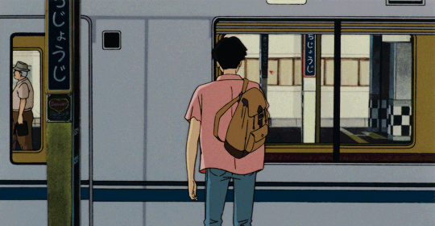

MUSIC
Magazine
2020.04 호


„The history of art and art's condition at any time are pretty messy“ schreibt Donald Judd 1964 in einem Artikel, der sich der New Yorker Kunstszene widmet. Er wendet sich darin gegen traditionelle Unterscheidungen von Stilen und Gattungen und plädiert für eine ungezwungene Begegnung mit Kunstwerken. Judds Analysis einer lokalen Szene ist Augangspunkt für das Experiment. Werke aus der Friedrich Christian Flick Collection und der Sammlung der Nationalgalerie, ergäzt durch ausgewählte Leihgaben, in den Kontext ihrer Entstehung zu bringen.
Welche Kunst war prägend für Donald Judd? Was Verbindet Konrad Lueg, Sigmar Polke und Gerhard Richter? Welche Galerien haben Bruce Nauman oder Jenny Holzer in ihren frühen Karrierephasen unterstützt? Mintunter ungewöhnliche Werk-Aufstellungen liefern Momentaufnahmen aus dem New York und Düsseldorf der 1960er- und 1970er-Jahre, dem Köln der 1980er-, dem Berlin und Los Angeles der 1990er Jahre.
Im Frühjahr 2019 erscheint eine Publikation zur Ausstellung.
Abbildungen/Images Vorne/Front: Carl Andre, 5 x 20 Altstadt Rectangle, 1967, Installationansicht Galerie Konrad Frischer © Archive Dorothee und Konrad Fischer, Stiftung Kunstsammlung Nordrhein-Westfalen, VG Bild-Kundst, Bonn 2018/Foto: Fred Kliche/Courtesy: Zentralarchive des internationalalen Kunsthandels ZADIK; Richard Jackson, Untitled(Wall Painting), 1988/2006 © Saatliche Museen zu Berlin, Nationalgalerie/Foto: Roman Marz/Courtesy: Friedrich Christian Flick Collection im Hamburger Bahnhof/Richard Jackson und Hauser & Wirth; Hinten/Back: George Segal,
Man Installing Pepsi-Sign, 1973 © The George and Helen Segal Foundation, VG Bild-Kunst, Bonn 2018 © Staatliche Museen zu Berlin, Nationalgalerie/Foto; Andres Kilger/ Courtesy: Fredrich Christian Flick Collection im Hamburger Bahnhof; Cindy
Sherman, Untitled (#123), 1983 © Staatliche Museen zu Berlin, Nationalgalerie/Foto: Stefan Cindy Sherman, Sprü Magers und Metro Pictures.
Gestaltung/Graphic design NFL Team, www.nfl-team.de

Classic 1900s Lofi
Cowboy Bebop Tracks
Plastic Love Short ver
도시의 설레임이 가득한 일본 시티팝
50s & 60s vibes Lofi
잠만 자는데도 잠잠했으면 좋겠다
The history of art and art's condition at any time are pretty messy", Donald Judd wrote in 1964 in an article on the New York art scene. In this piece he opposed traditional differentiations of style and genre, advocating instead a more casual encounter with works of art. Judd's analysis of the local art scene is the starting point for an experiment that takes works from the Friedrich Christian Flick Collection and the Collectino of the Nationalgalerie – enhanced by selected loans – and resituates them within the context of their making.
Which art influenced Donald Judd? What connects Konrad Lueg, Sigmar Polke and Gerhard Richter? Which galleries supported Bruce Nauman and Jenny Holzer during the early stages of their careers? Occasionally unusual work constellations provide snapshots of New York and Düsseldorf in the 1960s and 1970s, Cologne in the 1980s, Berlin and Los Angeles in the 1990s.
An exhibition catalogue will be published in spring 2019.

Nationalgalerie im Hamburger Bahnhof – Museum für Gegenwart – Berlin
Invalidenstraße 50-51
10557 Berlin
www.smb.museum/hbf
Offnungszeiten/Opening hours
Di, Mi, Fr/Tu, Wed, Fri 10-18
Do/Thu 10-20
Sa, So/Sat, Sun 11-19